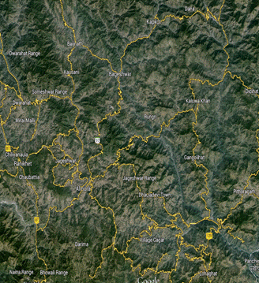
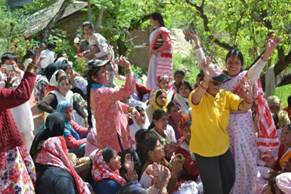

Paper Title :
EXPLORING POSSIBILITIES OF ECOTOURISM IN THE ECONOMIC AND SUSTAINABLE DEVELOPMENT OF KUMAUN REGION
Abstract
Ecotourism can preserve ecological and cultural environment of a region. Further, it can also contribute in green growth by promoting energy and water conservation and can also create economic opportunities for local communities. Uttarakhand which is renowned for its great Himalayan Mountain Ranges, Forests, and Rivers have many tourist destinations which may allure tourist from all over the world. But due to the catastrophe that took place in the State; domestic and foreign tourists are hesitant in visiting tourist destinations in Kumaun. In this perspective ecotourism can be used as a strategic tool for enhancing income generation of the local community with the true intention of conserving biodiversity. Thus, this paper attempts to identify various potential eco-tourism destinations in the Kumaun Region. Further, it also attempts to explore potential of ecotourism in the local capacity building and sustainable development of Kumaun Region.
Authors
Dr. Manjari Agarwal
Assistant Professor
School of Management Studies and Commerce
Uttarakhand Open University, Uttarakhand
Dr. Prachi Pathak
Assistant Professor
School of Management
Doon University, Uttarakhand
Paper Transcript of Paper Titled :
Exploring possibilities of ecotourism in the economic and sustainable development of Kumaun Region
Dr. Manjari Agarwal
Assistant Professor
School of Management Studies and Commerce
Uttarakhand Open University, Uttarakhand
Dr. Prachi Pathak
Assistant Professor
School of Management
Doon University, Uttarakhand
Abstract—Ecotourism can preserve ecological and cultural environment of a region. Further, it can also contribute in green growth by promoting energy and water conservation and can also create economic opportunities for local communities. Uttarakhand which is renowned for its great Himalayan Mountain Ranges, Forests, and Rivers have many tourist destinations which may allure tourist from all over the world. But due to the catastrophe that took place in the State; domestic and foreign tourists are hesitant in visiting tourist destinations in Kumaun. In this perspective ecotourism can be used as a strategic tool for enhancing income generation of the local community with the true intention of conserving biodiversity. Thus, this paper attempts to identify various potential eco-tourism destinations in the Kumaun Region. Further, it also attempts to explore potential of ecotourism in the local capacity building and sustainable development of Kumaun Region.
Keywords-Eco-tourism; Suistanable; Kumaun; Economics; Development;
Introduction
Ecotourism intends to achieve economic growth and development along with the preservation of the environment. It is a part of nature based tourism which aims to develop a region economically with various eco-friendly programmes and activities with an intention of preserving cultural integrity of local people and particularly, the environment. It is tourism aiming economic development through protecting biodiversity.
Ecotourism = “Tourism+ Economic Development + Environmental Conservation”
Ecotourism and related small-scale, entrepreneurial tourism businesses visualize possibilities for combining rural value-capture with economic, social and ecological sustainability (Marsden and Smith, 2005)1. Thus, ecotourism can preserve ecological and cultural environment of a region. Further, it can also contribute in green growth by promoting energy and water conservation and can also create economic opportunities for local communities. It has therefore, proven to be a powerful incentive for conservation in many parts of the world. (Ban Ki-moon, 2012 )2
Ecotourism is identified as the fastest growing sector of the global tourism industry (Roberts and Thanos, 2003)3. The growing economic and national importance of this kind of tourism has, over the last few years attracted the attention of most governments around the world, and particularly, those of developing countries. Accordingly, in India, the Ministry of Tourism has shown tremendous interest in promoting ecotourism in the country in a responsible and sustainable manner4. With this mandate, in the year 2011, the Ministry prepared Sustainable Tourism Criteria and Indicators for hotels, tour operators and other stakeholders. Further, it has also developed criteria and indicators for rural tourism and home-stays. Besides these, the following principles were also formulated to guide initiatives of Ministry of Tourism for promoting ecotourism in India;
a) Involvement of local community for overall economic development of an area.
b) Resolution of conflicts between resources utilised for ecotourism and livelihood of local inhabitants.
c) Compatibility of type and scale of ecotourism development with the environment and socio-cultural characteristics of the local community, and
d) Overall area development strategy, guided by an integrated land-use plan avoiding inter-sectoral conflicts and ensuring sectoral integration, associated with commensurate expansion of public services.
These principles have been laid-down to establish an ideal balance between tourist numbers without sacrificing with natural and cultural heritage. With these directives, the Government of Uttarakhand has also initiated for promoting ecotourism as an endeavour of the ten-year ‘Green India’ plan. A wing has also been created by the State Government to draft policies and to provide funding for various eco-tourism projects. With this mandate, Centre for Ecotourism and Sustainable Livelihood has also been established near Corbett Tiger Reserve by the Forest Department of Uttarakhand. Further, Uttarakhand Tourism Development Master Plan (2007-2022) has recognized the importance of ecotourism and sustainable development5. But still, implementation of these ecotourism initiatives in Uttarakhand is still in a very nascent stage.
Need of Study
Ecotourism have a huge potential in contributing sustainable development of Uttarakhand by providing socio-economic benefits to local communities together with preserving physical, cultural and environmental heritage. Uttarakhand which is renowned for its great Himalayan mountain range, forests, and rivers have many tourist destinations which may allure tourist from all over the world. But, due to the catastrophe that took place in the State, domestic and foreign tourists are hesitant in visiting tourist destinations. Further, the livelihood of the people involved in tourism has been ruined by the natural calamity that hit the State last year. Consequently, the business from tourism has been reduced to 20 to 30 percent due the floods and landslides. Therefore, there is an urgent need to explore the possibilities for reviving confidence of tourists towards Uttarakhand and for bringing domestic and international tourist to the State. In this perspective ecotourism can be used as a strategic tool for enhancing income generation of the local community with the true intention of conserving biodiversity.
Thus, this paper attempts to identify various potential eco-tourism destinations in the Kumaun Region. Further, it also attempts to explore potential of ecotourism in the local capacity building and sustainable development through eco-tourist destinations of Kumaun Region.
Eco-tourism
Ecotourism means travelling to the undisturbed natural areas with the minimal impact on environment and local culture. It involves visiting the places which are close to nature without much disturbing flora and fauna of that region. As per oxford dictionary, eco tourism is a tourism directed towards exotic natural environments, intended to support conservation efforts and observe wildlife. Initially, it was defined by Ceballos-Lascurian (1987) as ‘travelling to relatively undisturbed and uncontaminated natural areas with the specific objective of studying, admiring, and enjoying the scenery and its wild plants and animals, as well as any existing cultural manifestations (both past and present) found in these areas’6. A subsequent definition is given by Goodwin in which he identified key criteria for ecotourism that includes activities which must be environmentally and culturally sensitive and these must directly benefit conservation and local people who in turn have an incentive for conservation and these must be self sustaining within the context of the natural and cultural habitats in which it takes place. (Goodwin 1996)7.
Further, in the recent years it has been elaborately explained by the IUCN’s Eco tourism programme as “environmentally responsible travel and visitation to relatively undisturbed natural areas, in order to enjoy and appreciate nature (and any accompanying cultural features –both past and present) that promotes conservation, has lower visitor impact, and provides for beneficially active socio-economic involvement local populations”. (Ceballos-Lascurian H. 1996) 8. Moreover, ecotourism has been defined very differently by Ecotourism Kenya (EK), as “the involvement of tourists in environmental conservation activities directly linked to addressing human development needs, and promotes equitable sharing of benefits accrued from tourism with local communities while supporting their nature conservation values.”9
Ecotourism has also been studied in different perspectives. For example, Farrel and Runyan in year 1991 even distinguished it with the nature tourism and has described it as more exclusively purposeful and focused on the enhancement or maintenance of natural systems10. Higham has seen it as a subset of sustainable tourism, as it complies with the principles of sustainable development (Higham 2007)11. This becomes evident in the discussion by Kruger (2005), who wrote that the rise of interest in ecotourism can be largely attributed to the rise of the term sustainability12. It has also been studied with Adventure and Culture and has been interpreted to include nature tourism in the broader perspective (Fennell, 1999) 13.
In nutshell, ecotourism is travelling to the places which are relatively undisturbed natural areas for enjoying and appreciating nature and culture as well as garnering positive benefits, both for the environment and the local communities visited.
Objective of the Study
The objectives of the present study are;
To identify the potential tourist destinations for eco-tourism in Kumaun region of Uttarakhand
To explore potential of ecotourism in the local capacity building and suistanable development of Kumaun Region.
To suggest various steps for promoting ecotourism in the Kumaun region.
This paper empirically examines the local communities based ecotourism in an interpretive and naturalistic way.
Potential of Eco-Tourism in Kumaun Region
Kumaun is a renowned for its vast natural resources, majestic Himalayas, soaring and enthralling Pine and Deodar trees and serene places of worship, surely make it as ‘ Dev-Bhumi’ i.e. Abode of Gods’. Kumaun has a rich and old tradition and culture which offers variety of fairs, festivals and revels in Kumaun. It includes districts of Almora, Bageshwar, Champawat, Nainital, Pithoragarh and Udham Singh Nagar. It shares its border by Tibet in North, Nepal on the East, Garhwal on the West and South by Uttar Pradesh.
Climate and topography of Kumaun offers tremendous opportunities for the people who wish to ensure that their holiday creates positive benefits, both for the environment and the local communities visited. The same has been affirmed by Bhatt Abha (1996) “Today, when the town-dweller is caught up in the mind-numbing pressures of the jet-age, the hills beckon for a fascinating re-discovery of our roots, untouched by pollution and hurly-burly of urban life, waiting to open vistas of nature in its pristine, glory, leaving an unforgettable imprint on the mind of visitor.”14 Further, Kumaun experiences varying climatic conditions all throughout the year which add to opportunities for eco-tourists. Thus, Kumaun could be best described as extremely interesting place for eco-tourism.

Identified places for establishing eco-hubs and ethnic villages in Kumaun
Keeping in mind the scope of eco-tourism in the region, the following places are identified as major places where eco-hubs or ethnic villages can be established in Kumaun. These are Ranikhet, Almora, Bageshwar, Baijnath, Someshwar, Kapkot, Gangolihat, Pithoragarh and Didihat. These places have tremendous potential of attracting tourist in the Kumaun region of Uttarakhand without much eroding its natural or cultural assets. Not only it will help in revenue generation but will also help in providing employment and business opportunities to the unemployed people in the State.

Soaring Himalayan Ranges

Eye Catching layered agriculture farms
Exploring potential of eco-tourism in the local capacity building and suistanable development of kumaun region
Economically, ecotourism in Kumaun is of great importance, especially at uphills where incomes avenues are meager; it can make significant contribution to livelihoods. In remote areas, there are usually fewer income generating alternatives and ecotourism can lend a hand in diversifying the economic status of the local community. Consequently, it can also assist in reducing migration of youth from the hills to urban areas.
The ecotourism opportunities which can supplement in local capacity building and sustainable development of Kumaun are explored as under;
Eco-packages Tours and Camps
Ecotourism
Eco-tourism activities in the form of eco-package tours and camps can magnify potential revenues of tourism operators, planners and administrators in the region. Centre for Ecotourism and Sustainable Livelihoods have initiated in organizing eco-camps at Choti Haldwani, Bhimtal, Munsyari and Maheshkhan, but the same needs to be replicated to other prime locations of Kumaun. Tourism operators and planners in the region can act as eco-entrepreneurs in planning and organising ecotours with the local community. Participative management with the local community will not only improve ecosystem and environmental conditions of these places but will also yield substantial revenues. The places where eco camps can be organised are Pawalgarh, Dhauladevi, Dalar, Risal, Didihat, Kausani, Marchula, Manila, Chilianaula,Dhunaghat, Lohaghat,Madkote and Pancheshwar.
Further, tourism operators like KMVN and Forest Department, individually as well as collaboratively may organise eco camps in the picturesque locations of Ranikhet, Someshwar, Bageshwar and Pithoragarh. Further, National Parks and wild life sanctuaries like Pawalgarh, Binsar and Nandhaur should be developed as the eco-clusters especially to attract international tourists in the region..
Accessibility of eco-hubs to the tourist
Eco fragile areas should be easily accessible and available to the eco-visitors. It is observed that the transport and communications network in Kumaun is fragmented and costly.
Therefore, development of basic infrastructure, improvement of accommodation facilities and availability of transport arrangements in eco-hubs at Kumaun would help in attracting eco-travelers in the region. However, this development should preserve the natural beauty of the place without much affecting its flora and fauna. Additionally, creation of traditional homes in eco hubs with the local community would definitely result in earning extra income to the local people and would also provide accommodation facilities to the travelers. The model of Choti Haldwani near Corbett may be replicated in the places identified for promoting eco-tourism in the region. Home-stays in traditional huts, celebrating rituals and festivals with the local habitants, discovering of local habitats and wildlife with the local people will help in generating extra income. Part of income so earned can be ploughed back in funds for empowering local community for developing their areas and will assist them in conserving environment. Further, these funds will also provide support solutions to the native problems of the local communities. It will also help them in rebuilding their areas quickly in case of any landslides or disasters. Therefore, proper roads, basic utilities and health care facilities shall be developed in these eco-hubs for providing safe and healthy stay.
Traditional houses in hilly areas for offering home stays for tourists
Involvement of local people in eco-hubs
Ecotourism can provide viable economic development alternatives for local communities with various income-generating options and accordingly, local people should be involved in ecotourism activities in numerous ways. The community-focused approach of ecotourism will help in improving quality of life of local inhabitants as well as will help in the conservation of the resources. Association of local people with the tourists will also ameliorate tourist in gaining experiences of hill’s life. Accordingly, the local community may be integrated in formulating ‘Ecotourism Promotion Committees’ in association with the NGO and SHG in management of Home Stays and in providing facilities to the travelers. Strategically, ecotourism can be promoted in Kumaun by picking up the following key initiatives:
Foremost, Local Women (including senior female members of the families called Aama) may be involved in promoting eco tourism such as preparing local cuisine, mythological storytelling and providing interactive workshops on handicrafts to the travelers. This will attract tourists from various parts of the country as well as from foreign countries.
Involvement of Local Women
Eco tourism can also create additional employment for local people as eco-tour guides, camp managers, sales assistants, care takers, cooks and drivers. Therefore, capacity building programmes in terms of trainings, short-term courses and workshops shall be organised in eco-hubs for making local inhabitants competent enough in handling the above capacities effectively.
Interactive craft workshops like crafts from Ringal, Candle making, Aipan art, Shawls, Wooden work etc. can be organized with the help of the local community. This will help in promoting Kumaoni art and culture among the tourists.
Further, local haats and crafts fairs shall also be organised with the help of NGOs and Cooperatives as they are very effective in attracting travelers for buying rural art and crafts items and will also augment income generating possibilities in the hilly areas.
Cultural carnivals, fairs and festivals
Kumaun have rich custom of celebrating functions and festivals that represents religious, social and cultural pride of the region. These local and regional festivals provides major source of recreation and entertainment through dance performances, kumauni cuisine and exquisite Handicrafts. Thus, these will definitely contribute to the tourist’s acquaintances with the local aesthetic.

Falgun Utsav, Ranikhet
Kandali Mahostav, Chaudas Valley, Pithoragarh
• Ecogaze/ Eco parks-
Nature in Traditional ecotourism is developing towards a medium for self-fulfillment (Gossling S. and Hultman J.,2006)15. Thus, nature based tourism provides an opportunity to tourist to observe flora and fauna in their natural habitats. In Kumaun, National Parks like Corbett, Nainital, Binsar , Wild Life Sanctuaries like Pawalgarh, Nandhaur, Ascot and Binsar allows tourists to experience nature reflexively.
There are various terms that are related to ecotourism, some of them are identified to promote ecotourism in the Kumaun region.
Related segments of Ecotourism |
Sites identified in Kumaun as eco-destination |
Activities for promoting eco tourism |
Rural Tourism |
Choti Haldwani, Munsayari, Mahesh Khan, Ranikhet, Dwarahat and Madkote |
Eco-huts, ethnic villages and home-stays |
Adventure Tourism |
Bageshwar, Almora, Nainital,Sigri, Munsiyari, Champawat, Pithoragarh |
Trekking and excursions
River Rafting Paragliding |
Sports Tourism |
Ghat (Kosi River), Corbett, Marchula (Ramganga River) |
Water Sports AeroSports |
Green Tourism |
Pangot, Kausani, Munysari, Ranikhet, Dwarahat, Mukteshwar, Bhowali, Almora, Ramgarh, Binsar, Didihat, Jageshwar, Someshwar, Champawat, Lohagat, Chalthi and Ramgarh |
Eco-gaze |
Cultural Tourism |
Kashipur (Chaiti fair) |
Fair and Festivals |
Health Tourism |
Kausani, Kiccha, Nainital, Mukteshwar, Bhowali, Almora, Ranikhet, Ramgarh and Binsar |
Indigenous health care traditions like Ayurveda, Siddha, Unani, Homeopathy, Naturopathy, and Yoga . |
Agri-Tourism |
Chafi, Pantnagar, Ramnagar, Munsyari, Bageshwar,Ranikhet, Chaukutiya, Mukteshwar. |
Exploring Horticulture and Agriculture activities in these area |
Community-based ecotourism |
Ramnagar, Nainital, Bhimtal, Kausani, Ramgarh, Ranikhet |
Conferences based tourism |
Suggestions
To suggest a few, the following steps if taken may be an initiative towards eco-tourism;
1. Conducting tourism awareness programme for larger communities would increase the footfalls of the tourists to beautiful destinations.
2. Sensitizing the frontline people about the eco responsibility may be another step towards eco-tourism.
3. The steps may be taken to train the tour guides who actually act as a guardian to the environment.
4. The visitors can also support the local business by purchasing the goods which are locally produced.
5. Solar light equipments may be used at the places which need to be conserved for tourism.
6. Construction of toilets at the camping sites would help in preserving the environment and keeping the place clean and hygienic.
7. Publishing hand-book containing the details of the local and regional culture of the destinations and making them available to the traveler free of cost would be an ideal solution.
8. Creation of website advertising the local visiting spots and display of photographs would also enhance the prospects of the tourists to visit such places.
9. Local camps at the unexplored areas would certainly result into adventurous tours and would attract the tourists.
10. One-stop solution such as obtaining permission to visit the designated places from competent authorities, providing accommodation, facilitating transport arrangements with the help of bus/ taxi operators etc. would widen the scope of ecotourism in the region.
11. Establishment of eco-museums at the prime locations of Kumaun will help in depicting the culture and traditions of Kumaun and will also preserve traditional artistic work, jewelry, treasures of historical importance etc. This will also give mythological insight into the values and ancient traditions of the place.
12. Community participation in the decision making process of tourism development will ensure sustainability and acceptability of tourism in the untouched areas of Kumaun.
Discussion and Conclusion
The “Green Laws” of conservation should be disseminated to the masses so that they may realize that ecotourism is the way to maximise economic, environmental and social benefits of tourism. Today, everyone is a stakeholder in the process of conserving the environment and the same can be sustained when everyone shares the equal responsibility. Ecotourism provides income-generating opportunities to the local communities with an honest intention of conserving and preserving ecology and culture, respectively. However, a planned and integrated approach on the part of Government, NGO, Tourism Promoting Agencies and Local people is essential in encouraging ecotourism for producing sound, economic, social and environmental outcomes. Further, carrying capacities of the different eco-regions have to be explored vis-à-vis influx of tourists in the main eco-circuits.
Greater Synergies among Forest Department, Vikas Nigams, and Government of Uttarakhand, Uttarakhand Tourism Board, Eco-Vikas committees shall be needed. Thus, focused approach for enterprising ecotourism in Kumaun in relation with the natural environment is the need of an hour.
References
Marsden, T. and Smith. E. (2005), Ecological entrepreneurship: Sustainable Development in local communities through quality food production and local branding, Geoforum 36 (2005) 440–451, http://cesruc.org/uploads/soft/130221/1-130221154447.pdf, last accessed on 11/10/2014
Ban Ki-moon, 2012 , as quoted in news item titled UN officials highlight role of tourism in achieving sustainable development, http://www.un.org/apps/news/story.asp?NewsID=43087, last accessed April 17,2014.
Roberts, T. and N. D. Thanos. (2003), Trouble in Paradise: Globalization and Environmental Crises in Latin America, New York: Routledge as quoted by Buchsbaum Bernardo Duhá, (2004), Ecotourism and Sustainable Development in Costa Rica, http://scholar.lib.vt.edu/theses/available/etd05052004171907/unrestricted/EcotourismCostRica.pdf, last accessed on 24/10/2014
Sustainable Tourism Criteria for India (2011), Draft, Ministry of Tourism, Government of India,http://tourism.gov.in/writereaddata/cmspagepicture/file/marketresearch/studyreports/sustainable_tourism_report_for_mot-goi-%20final%20approved.pdf last accessed on 17/04/2014. and http://www.tourism.gov.in/TourismDivision/AboutContent.aspx?Name=Tourism%20Infrastructure%20Development&CID=20&INO=15, Last accessed 29/03/2015
Tourism Development Master Plan (2007-2022), as prepared by Government of India, Government of Uttarakhand, United Nations Development Programme and World Tourism Organization, http://kol.indusnettechnologies.com/gov/UTDB/pdf/masterplanvol03.pdf, last accessed on 8/04/2014
Ceballos-Lascurian, H. (1987), The Future of ecotourism, Mexico Journal , January, 13-14 as mentioned by Blamey R.K. Principles of Ecotourism, The Encyclopedia of Ecotourism, Chapter 1, Page No. 6, Cambridge, USA:CABI Publishing
Goodwin, H.J. (1996), In Pursuit of Ecotourism. Biodiversity and Conservation 5, 277-291, As quoted by Nina Himberg 2006 in Masters thesis titled Community-based Ecotourism as a Sustainable Development Option in the Taita Hills, Kenya, https://helda.helsinki.fi/bitstream/handle/10138/29013/communit.pdf?sequence=2, last accessed March 3, 2014.
Ceballos-Lascurain H. (1996), Tourism, Ecotourism and Protected Areas, Chapter 2. IUCN, Gland, Switzerland.
Ecotourism Kenya (EK), http://www.ecotourismkenya.org/news.php?newsid=10, Last accessed on 24/10/2014
Farrel B.H.G. and Runyan, D. (1991), Ecology and Tourism, Annals of Tourism Research Volume 18, 26-40, http://www.glerl.noaa.gov/seagrant/ClimateChangeWhiteboard/Resources/Mac2/tourism%20and%20ecology.pdf, last accessed on 12/10/2014
Higham, J. (Ed.) (2007), Critical Issues in Ecotourism: Understanding a Complex Tourism Phenomenon, Great Britain: Elsevier Ltd. As quoted in The Contribution of Ecotourism in Local Development: The Case of the Torra Conservancy
Kruger, O. (2005), The role of Ecotourism in Conservation: Panacea or Pandora’s Box?, Biodiversity and Conservation, 14, 579 – 600. http://vm005.jbrj.gov.br/enbt/mestrado_profissional/seminario/24_Kruger%202005.pdf, last accessed 12/10/2014
Fennell, D.A. (1999), Ecotourism: an Introduction, Routledge, London as adapted by Fennell. D.A , Anglo-America, The Encyclopedia of Ecotourism, Chapter 7, Page No. 115
Bhatt Abha (1996), Enchanting Circuits of Kumaun Hills, as included in Man Culture and Society in the Kumaun Himalayas edited by Agarwal C.M, Chapter 4, Page No. 117, Shree Almora Book Depot
Gossling S. and Hultman J.(2006), Ecotourism in Scandinavia, Chapter8, PageNo.86, Cambridge, MA: CABI Publishing,
Photographs courtesy of Joshi Ghanshyam (2014), during excursion to Kumaun region.
Bibliography
Agrawal C.M. (1996), Man, Culture and Society in the Kumaun Himalayas,Almora: Shree Almora Book Depot
Buckley, Ralf (2009), Ecotourism: Principles and Practices, Cambridge, MA: CABI Publishing
David B. Weaver(2001), The Encyclopedia of Ecotourism, Cambridge, MA: CABI Publishing
Gossling S. and Hultman J.(2006), Ecotourism in Scandinavia, Cambridge, MA: CABI Publishing
Pathania Singh Kulwant and Kumar Arun (2008), Ecotourism, Delhi: Regal Publications
- AUTHORS PROFILE
- Manjari Agrawal is an Assistant Professor at the Department of Management Studies, Uttarakhand Open University, Haldwani. Her area of specialisation is Finance. Her research interest is in the area of Securities Market, Distance Learning and e-learning . Her interest is to research in a multi disciplinary perspective.
- Prachi Pathak is an Assistant Professor at the School of Management, Doon University, Dehradun. She completed her M.B.A. with dual specialization in Human Resource Management and Marketing Management. Her area of research interest includes Entrepreneurship, Work Culture and Psychological Well- being.